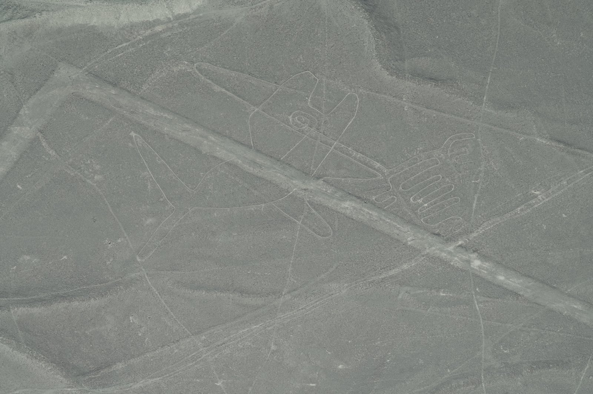
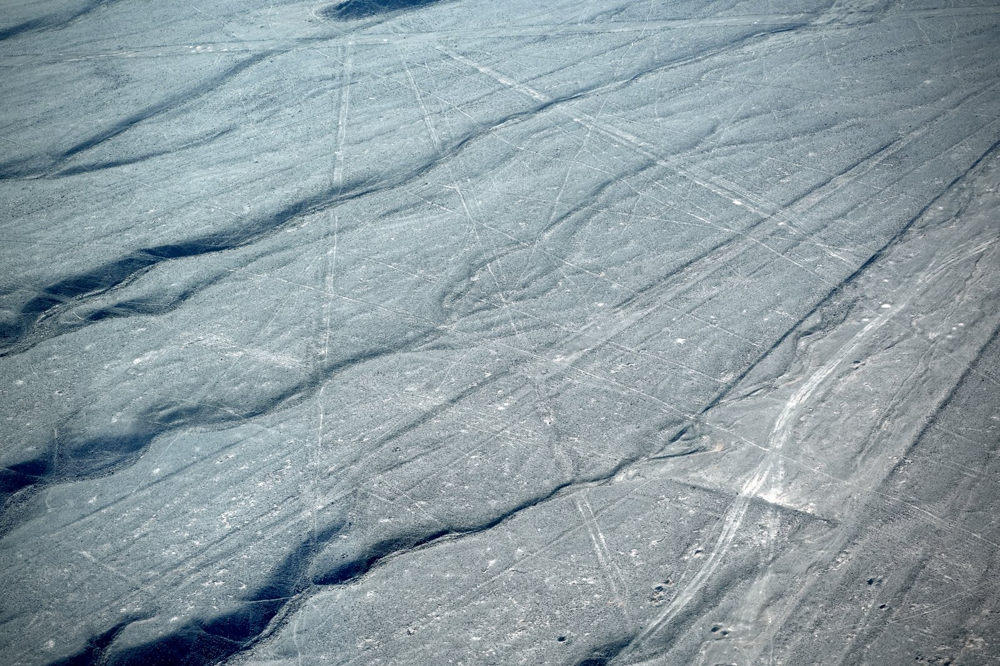
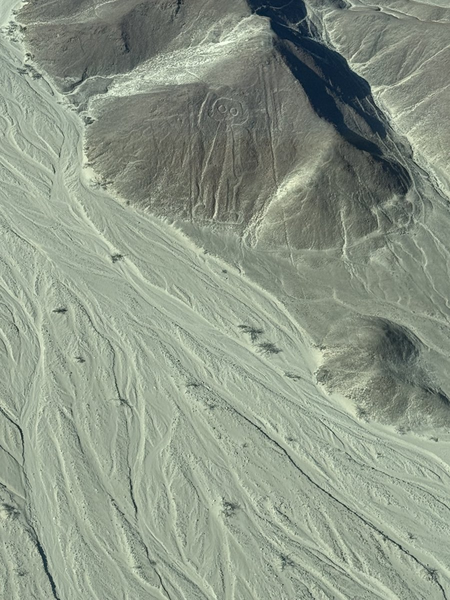

The View From Above
The figures only the sky can read.
Companion to Finding North
Its companion was about reading the sky to find your way across the earth. This one is the earth answering back: the places where people knelt in the desert and drew, at a scale that only makes sense from above.
Some were made before any way existed to rise and look. The honest question is not how. We know how. The question is why build something you cannot stand inside?
Nazca, where the ground became a page.

On the high desert between Nazca and Palpa, the surface is a thin skin of dark, iron-stained stones over pale ground. Sweep the dark stones aside and you draw a pale line that will last a thousand years, because it almost never rains. The Nazca did this at enormous scale: a hummingbird, a spider, a monkey with a coiled tail, and the great orca above, each a single unbroken line you could walk end to end without lifting your foot.

Around and beneath the animals run the other marks: dead-straight lines and long trapezoids, some kilometers long. That a line keeps its heading across broken ground is, whatever else it is, an exercise in the same sky-literacy that its companion entry is about. The overlap of figure and line is the whole subject in miniature.
The figures that watch from the hillside.

The famous animals are not the beginning. On the hills around Palpa, the earlier Paracas people had already been drawing, and they put many figures on slopes, not flats. A figure on a hillside is legible from the ground, at an angle. You do not need to fly to see it. The hillside "Astronaut" above is the case in point: it faces outward from the slope, meeting the eye of anyone on the valley floor. The tradition predates the postcard animals and outlasts them, and it complicates the "someone needed to see it from the sky" framing before we even ask what the figures meant.
The works of the old men.
Now widen the lens. Fly over the black lava fields of Arabia and the desert is covered, for thousands of square kilometers, in stone structures the Bedouin who found them called simply "the works of the old men": kites that funnel game into traps, spoked wheels, gates, and the vast rectangular mustatils of Saudi Arabia, some raised around seven thousand years ago, older than the pyramids, older than Stonehenge. There are thousands of them, most catalogued not on foot but from the air, and most barely known outside the archaeology of the region. The nearer Peruvian networks, the Casma Valley and Lima geoglyphs, say the same thing closer to home.
The impulse to mark the ground at a scale you cannot take in from the ground is not a Peruvian eccentricity. It is nearly worldwide.
The method, honestly.
This is where honesty matters most, because the gap the mystery-sellers exploit is a gap that isn't there. Making a giant geoglyph requires no flight, no aerial oversight, no technology the makers didn't have. Clear the dark surface to expose the pale ground. To scale a small drawing up enormously, use stakes and cords and simple proportion, the trick a muralist uses to grid up a sketch. Straight lines you hold by sighting stake to stake. A single continuous outline you simply walk, and never cross.
People have reproduced Nazca figures this way, at full size, from the ground, in days. The precision is real and admirable. It is also entirely human, and knowing that makes the figures more impressive, not less, because the wonder moves from "how" to "why," which is the harder and better question.
The readings, side by side.
Here the ground is genuinely open, so we lay the readings out and let them stand. Maria Reiche, who guarded the lines for half a century, read them as a vast astronomical calendar, though later testing found only some lines match solar or stellar risings, no more than chance might allow. Johan Reinhard reframed them as ritual related to water and fertility in a desert where water is life: paths to be walked in procession, pointing toward the mountains that bring the rain. Others read territory, lineage, or a subtler astronomy.
And there is a counter-case built into the landscape. The Nazca also dug the puquios, spiral stone-lined wells that still draw groundwater today. They are aerially legible and plainly functional, which undercuts any theory that everything here was purely ceremonial. The honest position holds several readings at once: some calendar, some procession, some water, and some we do not yet know. Whether any Nazca line was drawn to a solstice is exactly the kind of question we mark open rather than close.
The test case, and the method.
End with the discipline the whole subject demands. Fly west to the Sahara and you meet the Richat Structure, the "Eye of the Sahara," concentric rings dozens of kilometers across that look, from orbit, unmistakably designed. They are not. It is a geological dome, eroded into rings by nothing but time and water. It is the perfect teacher: proof that "looks made, from above" and "was made" are two different claims, and that the eye which reads the ground can be fooled by the ground itself.
That is the test we carry back to Nazca. Some of what the desert shows us is deliberate and astonishing. Some is nature wearing a pattern. The work is telling them apart, soberly, with the evidence, holding the readings side by side.
Its companion closed by saying direction was the first thing we ever mapped. These lines are the mirror of that: the first things we ever drew for someone who was not there, a message pressed into the earth and addressed to the sky. We show the readings, mark what is firm and what is still argued, and let you decide which way to look.
Look up: how humanity found direction before the compass. Read together, the two make one argument: that the oldest conversation we ever had was between the ground and the sky.
Sources & further reading
- Nazca & Palpa. Maria Reiche's survey and preservation of the lines; Johan Reinhard on water and fertility ritual; recent AI-assisted surveys (Yamagata University / Masato Sakai) identifying many further figures.
- The "works of the old men." David Kennedy and the Aerial Photographic Archive for Archaeology in the Middle East (APAAME); the Saudi mustatils.
- Method. Modern full-scale reproductions of Nazca figures made from the ground using stakes and proportion, no aerial view required.
- The counter-case. The Nazca puquios (functional spiral aqueducts); the Richat Structure as a natural geological formation.
- Field photography. The whale, the straight lines, and the Owl Man photographed © Jeffrey Schaller, 20 June 2026, on an overflight of the Nazca pampa.
Aerial photographs © Jeffrey Schaller, 2026.